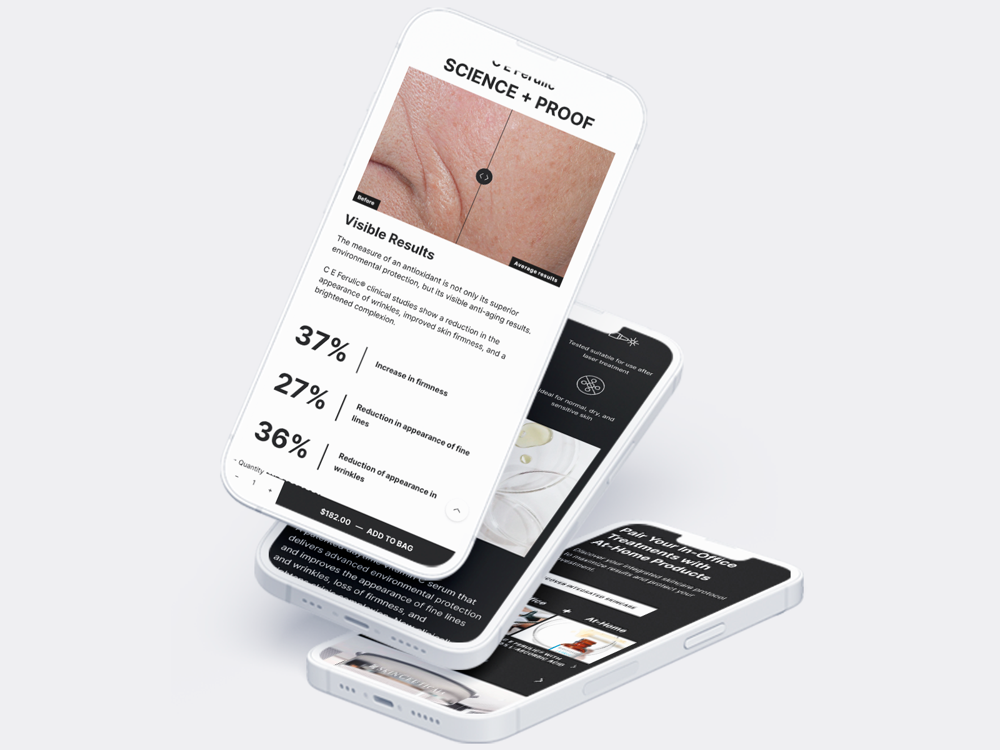
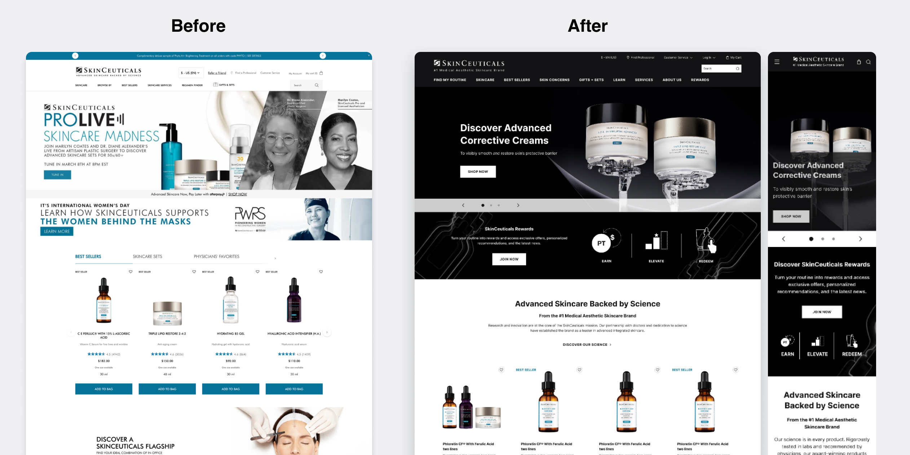
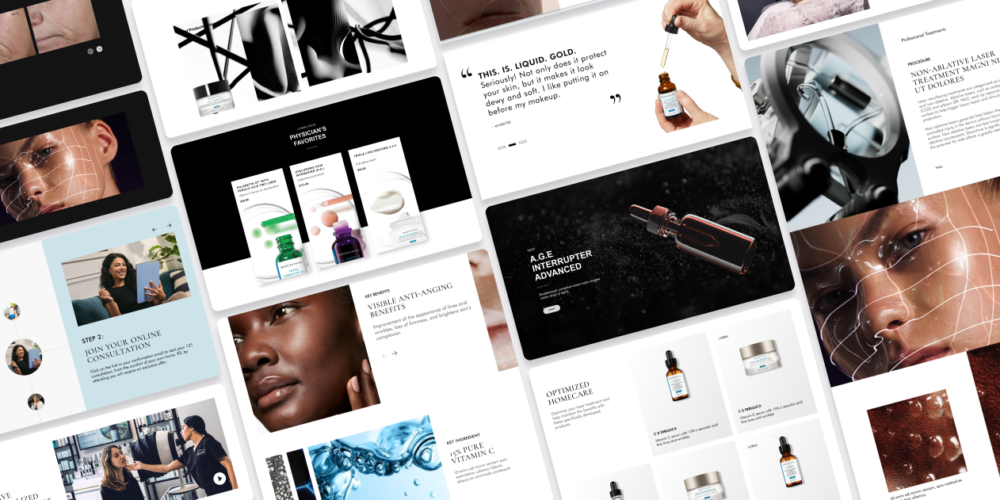
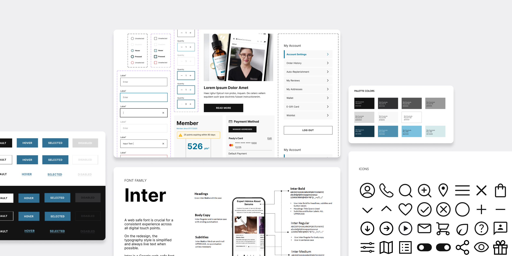
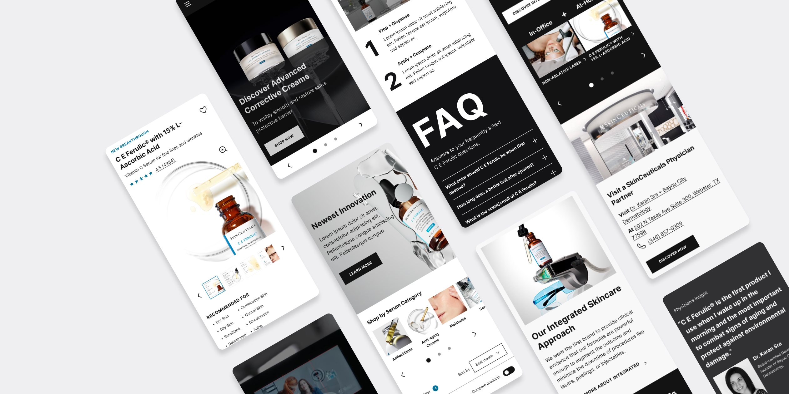
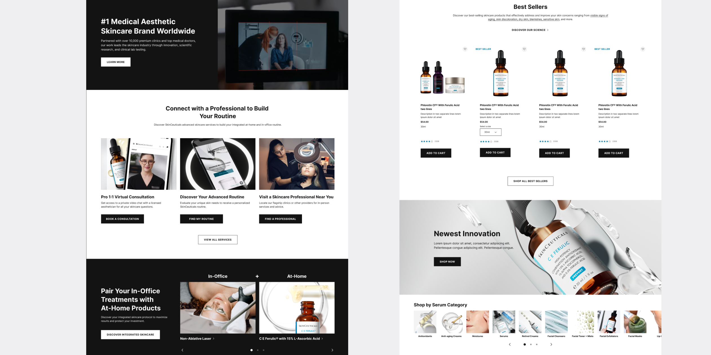
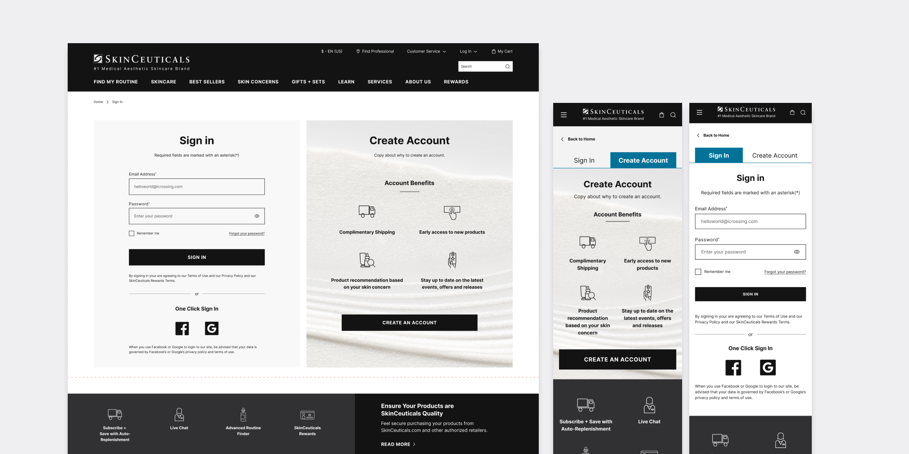

SkinCeuticals
Create a sensorial experience that unravels the science behind skincare

Overview
SkinCeuticals provides advanced skincare for all skin types and concerns. I had the opportunity to redesign the online experience for both mobile and desktop to better reflect the company's vision.
I worked with a cross-functional team and was responsible for establishing the design direction and building the design system.

Research
The team conducted user interviews and workshops to identify pain points and create personas and a customer journey map. These insights clarified what the evolved DTC experience should be.
Design exploration
I worked closely with the creative director to develop three distinctive design concepts. This part of the process is my favorite because it allows me to think creatively and explore all possible solutions.

Design system
Creating a design system helps manage design at scale by reducing redundancy and eliminating inconsistency.
This consistency leads to a more cohesive user experience and can significantly reduce development time and costs.




Impact